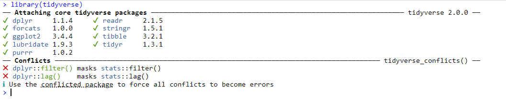

9 Data Wrangling and Cleaning (Part I)
In this session, we are going to learn how to use key packages and functions that enable you to conduct data cleaning in R.
By the end of this session, you should be capable of the following:
Understand the concept of
tidy dataandtidy principlesUsing the functions
select(),mutate(),rename(), andrelocateto perform key operations on columns.Using the functions
filter(),arrange(), anddistinct()to perform key operations on rowsUnderstand how to group information and perform calculations on those groupings.
Understand how to pipe together functions to enable efficient data cleaning analysis.
9.1 What is Data Wrangling and Cleaning?
If you read the literature on data science and data analytics, you will see terms like data cleaning, data munging, data wrangling, data transformation, data preprocessing, and data transponding. Often, when I see these words, I feel like Monica Bing in that one episode of Friends and scream “THAT’S NOT EVEN A WORD!”.
I am going to break down three of these terms:
Data cleaning refers to the process of identifying and correcting errors in your data set. This could involve fixing errors such as duplicates or typos, correcting formatting errors, and handling missing values.
Data wrangling refers to preparing raw data for statistical analysis. It includes data cleaning but also may involve changing the structure of your data, merging different data sets together, creating new variables, and getting your data in a structure that enables you to conduct whatever statistical analysis you intend to carry out.
Data munging is mostly synonymous with data wrangling. You “munge” data when you take it from a raw form and transform it into a format that enables data analysis.
Data preprocessing is an umbrella term for each of these processes. It encompasses anything you do to your data before you analyze it.
To give you a concrete example: If you download data from Qualtrics or Gorilla Research, it is not ready for statistical analysis right away. It will have rows and columns that you won’t need and will interfere with your data analysis (e.g., when you download SPSS data from Qualtrics, it will contain both data collected from when you previewed the study and when it went live).
The process of changing that data into a format that you can use (e.g., by removing preview rows, removing columns, changing column names) is data wrangling. However, if you run your descriptive and inferential statistical analysis and you notice that you have missing data in columns, or some rows are duplicated, or there are typos (e.g., Mal instead of Male) and you fix those errors, then that is data cleaning.
Data wrangling takes raw materials and builds a specific structure (e.g., like taking wood and cement and building a house you can live in). Data cleaning ensures that structure looks its absolute best.
9.1.1 Naming Conventions in this Book
I will often say data cleaning as a catch-all term for any process involved in getting data ready for statistical analysis. While it’s good to know the different meanings of these words when you are searching for specific information, it doesn’t affect your day-to-day analysis if you use them incorrectly. This might make a heretic in the data science community, but I can live with that.
So we will use data cleaning from this point out.
9.1.2 Why is Data Cleaning Important?
It’s estimated that 80% of your time working with data is actually focused on data cleaning. That’s partially because once your data is ready for statistical analysis, it only takes a few lines of code/button clicks to run the analysis. Since most of your time working with data will be on cleaning it, it’s really worthwhile to do it effectively and efficiently. By doing so, you will decrease the amount of time cleaning data (which let’s be honest, is dull) and spend more time on the interesting part - interpreting your results.
9.1.3 How can R help you with Data Cleaning?
Before I learned R, I used to clean my data manually in Excel. This was not ideal for two reasons, namely:
Mistakes were easy to make but difficult to spot. It’s easy to accidentally overwrite a value in a cell, delete rows, or make some small mistake when doing it by hand - and not even notice it.
I would need to repeat the process over and over again whenever I reran the study, collected more data, or noticed a mistake in my data but could not identify when or how I made the mistake.
This made the process excruciating time-consuming and stressful.
R can significantly increase the speed at which you can conduct data cleaning. You can write code instructions to import the raw data (e.g., from Gorilla or Qualtrics), clean it step-by-step, and save the cleaned data in a consistent manner. This significantly reduces the number of errors you can make. Additionally, if you collect any more participants, you don’t even need to look at the Excel files. Just download them into your working directory, run the same R script, and you will have your cleaned data. Finally, in times you notice that you did make a mistake (e.g., you excluded an important variable column) you just make that change in your R script and rerun the analysis.
9.1.4 Tidyverse (and Base R)
The tidyverse package is a comprehensive collection of R packages designed to facilitate consistent and intuitive data cleaning. At its core are three fundamental principles known as tidy data principles:
Every variable should occupy a separate column.
Every observation (e.g., participant) should occupy a separate row.
Each value in the dataset should have its own cell.
Figure 9.1: Tidy Data principles
Tidyverse is probably the most well-known package in the R community, but there is controversy behind it. High-profile people in the R community debate about whether tidyverse is actually appropriate for beginners to learn and whether it really is more effective and efficient than base R. Similarly, some of the R community dislike the idea that the tidyverse is the only “real” way to conduct data cleaning.
We will be using both base R and tidyverse in this course. The main thing that you should know is that tidyverse and Base R are like two different dialects in R. If in the future you search for help on R code, the code might be written from one perspective or the other. If the code looks more like what you saw in Chapters 2-4, then it is in base R. If you search for help and looks more like the code in the rest of the course, it’s probably tidyverse.
Understanding both approaches will empower you to choose the one that aligns with your preferences and needs, ensuring you can find the right solution more effectively. Whether you are more comfortable with base R or tidyverse, knowing both approaches will enable you to navigate and utilize the wealth of resources available in the R community.
9.2 Let’s Get Set Up
Okay, that’s enough conceptual information for now - let’s learn how to actually clean some data. First, we are going to need to get our RStudio or PositCloud environment ready. We’ll do this by setting up our working directory, downloading and importing our data files, and then installing and loading the tidyverse packages.
9.2.1 Activity 1.1: Set up your WD
Remember that the working directory is the location where we want to store any resulting data files or scripts that you’ll work on in a session. In Chapter 2 I showed you how to do this using a button-and-click interface.
Using those instructions, create a folder called “Week4” in the rintro project folder (or whatever folder you created) and set it as your working directory. Use the ´getwd()´ to check that it has been set as your working directory. Your output should be something like this:
9.2.2 Activity 1.2: Import your CSV files and R script
You need to import several files for this activity:
raw_remote_associations.csv
data_cleaning_script.R
You can find this files either on Canvas or on the OSF Page.
If you’re using RStudio, you should see these files in your working directory within the Files pane. Open the R script (data_cleaning_script.R).
To import the raw_remote_associations.csv dataset into R, do the following:
- Click Environment in the Environment Pane -> Import Dataset -> From Text(base) -> Select raw_remote_associations.csv -> change its name to df_raw
- See last week’s section on importing data for more information
Alternatively, you can run the following command within the data_cleaning_script.R
9.2.3 Activity 1.3: Install and load the tidyverse package
A good practice in R is to load packages at the start of your script. In the downloaded R script, you’ll find the following lines commented out. Copy and paste the code install.packages("tidyverse") into your console and press enter to download the tidyverse package.

Figure 9.2: Tidyverse Installation
Once installed, uncomment and run the library(tidyverse) in your script to load the package. If installed correctly, you should see the tidyverse package and its dependencies listed in the console. Since tidyverse contains multiple packages, it will load them all at once. So if you see the following then you are good to go.

You might also get the following warnings when you load in R. If you do, that just means you are using an older version of R. At the beginning of the class, we downloaded version 4.2 onto our own computers, but in the meantime version 4.3 has been released. We can stick with our current version for now.
Warning: package ‘tidyverse’ was built under R version 4.3.2
Warning: package ‘ggplot2’ was built under R version 4.3.2
Warning: package ‘tibble’ was built under R version 4.3.2
Warning: package ‘tidyr’ was built under R version 4.3.2
Warning: package ‘readr’ was built under R version 4.3.2
Warning: package ‘purrr’ was built under R version 4.3.2
Warning: package ‘dplyr’ was built under R version 4.3.2
Warning: package ‘stringr’ was built under R version 4.3.2
Warning: package ‘forcats’ was built under R version 4.3.2
Warning: package ‘lubridate’ was built under R version 4.3.29.3 Cleaning the Remote Associates Data set.
9.3.1 Context and Viewing it in RStudio
The dataset we imported and are cleaning today comes from a study investigating the effect of mood induction on convergent thinking. Participants were required to read three emotional vignettes (one positive, one negative, and one neutral) before completing a remote associations test. In this test, 41 participants had to identify the link between given words (e.g., Square / Cardboard / Open, with the answer being “Box”). The order of the vignettes was counterbalanced across participants. Additionally, participants completed five items on Openness from the Big Five Aspects, as it is known to positively correlate with convergent thinking.
The first step after importing a dataset is to check it to ensure that we have imported the correct data. We can do this using the head() function:
#View(df_raw) to open a new tab in Source and look at the entire dataset
head(df_raw) #this will load the first six rows into the console## X Participant.Private.ID Local.Timestamp Experiment.Status
## 1 1 10168827 1.70601e+12 preview
## 2 2 10192092 1.70601e+12 preview
## 3 3 10205485 1.70601e+12 preview
## 4 4 10208522 1.70601e+12 preview
## 5 5 10218310 1.70601e+12 preview
## 6 6 10225898 1.70601e+12 preview
## remote.assocotations.1 remote.assocotations.2 order Remote.association.3
## 1 6 13 ABC 22
## 2 9 18 ABC 27
## 3 6 6 BCA 6
## 4 3 10 ABC 18
## 5 9 18 CAB 27
## 6 3 7 ABC 11
## Response Participant.OS response1 open1 open2 open3 open4 open5 age gender
## 1 END Windows 10 50 3 3 3 3 3 34 male
## 2 BEGIN Windows 10 63 3 4 3 3 3 34 female
## 3 bank Windows 10 73 2 4 4 3 3 18 male
## 4 day Windows 10 58 3 3 2 2 3 29 female
## 5 black Windows 10 68 3 3 2 3 2 46 male
## 6 common Windows 10 54 2 3 3 2 3 40 femaleOuch! Now that is a data set only a parent could love. Here is what each column is telling us about each participant
| Column | Description |
|---|---|
| X | An empty column that counts the row number. |
| Participant.Private.ID | Experiment ID. |
| Local.Timestamp | Timestamp indicating when participants took part in the study. |
| Experiment.Status | Indicates whether the study was published (live) or not (preview) for each participant. |
| Remote-Associations1-3 | Scores on each remote associations task. |
| order | Order of watching the vignettes (A = “positive”, B = “negative”, C = “neutral”). |
| Response | Participants’ answers on the remote associations task. |
| Participant.OS | Operating system used by participants. |
| response1 | Aggregated mood score. |
| open1-open5 | Scores on Openness items. |
| age and gender | Participants’ age and gender. |
However, several issues are evident in this dataset:
Pointless columns: Columns such as “Local.Timestamp” and “Participant.OS” are unnecessary for our analysis.
Awkward, inconsistent, or misspelled column names: Columns like “Participant.Private.ID” and “remote.assocotations.2” have awkward or misspelled names.
Column order: The order of columns is not ideal, with important columns scattered throughout the dataset.
Improper scoring: The maximum score on each remote association task in this study was 9. However, we have several scores that exceed this maximum value.
Mismatch in participant count: The dataset reports a different number of participants who completed the experiment (52) than what was expected (41).
Presence of preview data: The dataset contains responses from both the preview and live phases of the study, which need to be addressed by removing preview data.
9.3.2 Key Functions That Will Help You Clean Most Datasets
The following functions are extremely useful for cleaning data frame in R. They all come from the tidyverse package. The following table defines each package and what it does. We will use each function in this chapter to clean the remote_associations data frame, so you will get to practice each one.
| Function | Description |
|---|---|
select() |
Include or exclude certain variables (columns) |
filter() |
Include or exclude certain observations (rows) |
mutate() |
Create new variables (columns) |
arrange() |
Change the order of observations (rows) |
group_by() |
Organize the observations (rows) into groups |
summarise() |
Create summary variables for groups of observations |
| disinct() | Select unique observations (rows) |
| rename() | Rename variables (columns) |
9.4 Selecting Columns using Select()
When you are first cleaning a data set, the first thing you should do is identify the columns that you might need in your analysis or hold important information. In our cases, these columns would be Participant.Private.ID, Experiment.Status, the response, remote associations, openness, and demographic columns. We can select those columns by using the select() function.
The formula for this function is: select(dataframe, c(col1name, col2name, col3name))
df_select <- select(df_raw, c(Participant.Private.ID, Experiment.Status, order,
remote.assocotations.1, remote.assocotations.2, Remote.association.3, Response, response1, open1: gender))
head(df_select)## Participant.Private.ID Experiment.Status order remote.assocotations.1
## 1 10168827 preview ABC 6
## 2 10192092 preview ABC 9
## 3 10205485 preview BCA 6
## 4 10208522 preview ABC 3
## 5 10218310 preview CAB 9
## 6 10225898 preview ABC 3
## remote.assocotations.2 Remote.association.3 Response response1 open1 open2
## 1 13 22 END 50 3 3
## 2 18 27 BEGIN 63 3 4
## 3 6 6 bank 73 2 4
## 4 10 18 day 58 3 3
## 5 18 27 black 68 3 3
## 6 7 11 common 54 2 3
## open3 open4 open5 age gender
## 1 3 3 3 34 male
## 2 3 3 3 34 female
## 3 4 3 3 18 male
## 4 2 2 3 29 female
## 5 2 3 2 46 male
## 6 3 2 3 40 femaleInstantly, that is immediately better. Now there is a couple of things you might have noticed in my code.
The first is that the order in which I put columns in select() is the order in which the columns appear in the df_select. This is a very useful feature of select() as it means we can reorder our dataframe and select the columns at the same time. Just to demonstrate this further.
df_select <- select(df_select, Participant.Private.ID, Experiment.Status, age, gender, order, remote.assocotations.1:open5)
head(df_select)## Participant.Private.ID Experiment.Status age gender order
## 1 10168827 preview 34 male ABC
## 2 10192092 preview 34 female ABC
## 3 10205485 preview 18 male BCA
## 4 10208522 preview 29 female ABC
## 5 10218310 preview 46 male CAB
## 6 10225898 preview 40 female ABC
## remote.assocotations.1 remote.assocotations.2 Remote.association.3 Response
## 1 6 13 22 END
## 2 9 18 27 BEGIN
## 3 6 6 6 bank
## 4 3 10 18 day
## 5 9 18 27 black
## 6 3 7 11 common
## response1 open1 open2 open3 open4 open5
## 1 50 3 3 3 3 3
## 2 63 3 4 3 3 3
## 3 73 2 4 4 3 3
## 4 58 3 3 2 2 3
## 5 68 3 3 2 3 2
## 6 54 2 3 3 2 3The second thing you might notice is that inside the c function I go from naming each column one at a time to using the : operator. If you remember from Chapters 3 & 4, when you are selecting elements from a data structure, the : operator enables you to select anything between those elements. So the code remote.assoctations.1:open5 selects every column starting from remote.assoctations1 and ending with open5. This saves us from having to type out every column.
What if we wanted to remove one or two columns? Is there an easier way to remove them then by specifying the columns we want? Yes! We can use select() to remove columns. All we need to do is put the - operator before the column we want to remove.
If you look at the Response column, it doesn’t really provide us with any genuinely useful information - we already have their performance on the task. So let’s get rid of it.
## Participant.Private.ID Experiment.Status age gender order
## 1 10168827 preview 34 male ABC
## 2 10192092 preview 34 female ABC
## 3 10205485 preview 18 male BCA
## 4 10208522 preview 29 female ABC
## 5 10218310 preview 46 male CAB
## 6 10225898 preview 40 female ABC
## remote.assocotations.1 remote.assocotations.2 Remote.association.3 response1
## 1 6 13 22 50
## 2 9 18 27 63
## 3 6 6 6 73
## 4 3 10 18 58
## 5 9 18 27 68
## 6 3 7 11 54
## open1 open2 open3 open4 open5
## 1 3 3 3 3 3
## 2 3 4 3 3 3
## 3 2 4 4 3 3
## 4 3 3 2 2 3
## 5 3 3 2 3 2
## 6 2 3 3 2 39.5 Renaming Columns with rename()
Our data set is definitely looking cleaner after having shedding those columns, but good grief are those names still ugly. Luckily, we can change their name using the rename() function. The syntax for this function is slightly counter intuitive in its order, as it goes like this: rename(df, newcolumnane = oldcolumnname)
df_rename <- rename(df_select,
ID = Participant.Private.ID, #newcolname = oldcolname
status = Experiment.Status,
remote_pos = remote.assocotations.1,
remote_neg = remote.assocotations.2,
remote_neut = Remote.association.3,
total_mood = response1,
condition = order)
head(df_rename)## ID status age gender condition remote_pos remote_neg remote_neut
## 1 10168827 preview 34 male ABC 6 13 22
## 2 10192092 preview 34 female ABC 9 18 27
## 3 10205485 preview 18 male BCA 6 6 6
## 4 10208522 preview 29 female ABC 3 10 18
## 5 10218310 preview 46 male CAB 9 18 27
## 6 10225898 preview 40 female ABC 3 7 11
## total_mood open1 open2 open3 open4 open5
## 1 50 3 3 3 3 3
## 2 63 3 4 3 3 3
## 3 73 2 4 4 3 3
## 4 58 3 3 2 2 3
## 5 68 3 3 2 3 2
## 6 54 2 3 3 2 39.6 Creating New Columns using mutate()
Okay, so we have gotten rid of superfluous columns and cleaned up the names of the ones we have left. But there is still a column “missing”. At the moment, we have participants’ scores on individual items for Openness to Experience. But unless we are running a reliability or factor analysis, we actually want participants’ total level of openness.
The mutate() function will help us create that column. This function takes existing column(s) and performs operations on them to create new columns in our data set.
Let’s use mutate() to create a column called total_openness. The syntax for this function is: mutate(df, new_column_name = instructions on what to do with current columns)
df_mutate <- mutate(df_rename,
total_openness = open1 + open2 + open3 + open4 + open5)
#new_col_name = operation on current columns
df_mutate$total_openness## [1] 15 16 16 13 13 13 16 14 14 14 14 15 14 15 14 14 16 14 15 15 18 14 17 14 16
## [26] 15 16 15 16 15 16 16 15 15 16 17 15 17 15 15 15 17 16 14 13 15 17 14 14 14
## [51] 17If we wanted to calculate the mean of these items, then the process is slightly more complicated. First, we would need to tell R that we want the mean per observation rather than per column (e.g., we need the mean score of open1 to open5 per participant, rather than across the entire dataset) by using the rowMeans() function. Then we would need to select() the columns that we want the row means from.
Let’s do this and save the operation to a new column called mean_openness
df_mutate <- mutate(df_mutate,
#we use `select()` to pick the columns we want
mean_openness = rowMeans(select(df_mutate,
c(open1, open2, open3,
open4, open5))))
head(df_mutate)## ID status age gender condition remote_pos remote_neg remote_neut
## 1 10168827 preview 34 male ABC 6 13 22
## 2 10192092 preview 34 female ABC 9 18 27
## 3 10205485 preview 18 male BCA 6 6 6
## 4 10208522 preview 29 female ABC 3 10 18
## 5 10218310 preview 46 male CAB 9 18 27
## 6 10225898 preview 40 female ABC 3 7 11
## total_mood open1 open2 open3 open4 open5 total_openness mean_openness
## 1 50 3 3 3 3 3 15 3.0
## 2 63 3 4 3 3 3 16 3.2
## 3 73 2 4 4 3 3 16 3.2
## 4 58 3 3 2 2 3 13 2.6
## 5 68 3 3 2 3 2 13 2.6
## 6 54 2 3 3 2 3 13 2.6If we do not need the individual items, then there is an argument in mutate() called .keep. This specifies what should be done with the columns that were operated on to create the new column. If this argument is set to unused, then R will only keep columns that were not used to create the new column. In other words, it will remove any columns used to calculate the new column.
df_mutate <- mutate(df_rename,
total_openness = open1 + open2 + open3 + open4 + open5,
.keep = "unused")
head(df_mutate)## ID status age gender condition remote_pos remote_neg remote_neut
## 1 10168827 preview 34 male ABC 6 13 22
## 2 10192092 preview 34 female ABC 9 18 27
## 3 10205485 preview 18 male BCA 6 6 6
## 4 10208522 preview 29 female ABC 3 10 18
## 5 10218310 preview 46 male CAB 9 18 27
## 6 10225898 preview 40 female ABC 3 7 11
## total_mood total_openness
## 1 50 15
## 2 63 16
## 3 73 16
## 4 58 13
## 5 68 13
## 6 54 139.6.1 Rewriting Existing using mutate()
If we have a column that contains mistakes, we can use mutate() to rewrite that column’s values. The syntax for this is the same as when you are creating new columns with mutate: mutate(df, existing_column_name = instructions on what to do with current columns)
If you look at our columns remote_pos, remote_neg, and remote_neut, there is a mistake. Each column should represent the participants’ scores (out of a maximum score of 9) on the remote associations task after engaging with either positive, negative, or neutral stimuli. However, while remote_pos scoring looks correct, the scores for remote_neg are going up to 18, and the scores for remote_neut are going up to 27. So what is going on?
What happened here is that Gorilla Research added participants’ scores on each task to each other. So the remote_neg column is really the participants’ correct answers on remote_pos plus their correct answers on remote_neg. Similarly, the remote_neut contains their scores on the remote_neg column plus their scores on the remote_neut task.
To fix this, the formula we need to use is the following:
remote_neg = remote_neg - remote_pos
remote_neut = remote_neut - remote_neg
We can fix this error using the mutate() function
df_mutate_ra <- mutate(df_mutate,
remote_neg = remote_neg - remote_pos,
remote_neut = remote_neut - remote_neg)
head(df_mutate_ra)## ID status age gender condition remote_pos remote_neg remote_neut
## 1 10168827 preview 34 male ABC 6 7 15
## 2 10192092 preview 34 female ABC 9 9 18
## 3 10205485 preview 18 male BCA 6 0 6
## 4 10208522 preview 29 female ABC 3 7 11
## 5 10218310 preview 46 male CAB 9 9 18
## 6 10225898 preview 40 female ABC 3 4 7
## total_mood total_openness
## 1 50 15
## 2 63 16
## 3 73 16
## 4 58 13
## 5 68 13
## 6 54 13Hold on, what happened here? The remote_neut scores are still 9+? Well, we first changed the column remote_neg to get our correct scores on this task. However, the new values of remote_neg are then inserted on the next line of the formula. To fix for this error, we need to put remote_neut first
df_mutate_ra_fixed <- mutate(df_mutate,
remote_neut = remote_neut - remote_neg,
remote_neg = remote_neg - remote_pos)
df_mutate_ra_fixed$remote_neut## [1] 9 9 0 8 9 4 9 5 9 2 1 9 6 7 9 28 4 8 9 7 0 4 9 9 9
## [26] 8 5 9 6 6 0 9 0 4 5 0 7 1 1 5 6 9 9 0 8 3 0 9 8 9
## [51] 1Better!
9.7 Checking in on our data set
We’ve done a good bit of cleaning so far. We have removed unnecessary columns, we have fixed their names and their order, we have created new columns, and we have fixed errors in existing columns. Our data set is looking nearly ready for analysis.
However, there is still data that needs to be removed. We should only have 41 participants in our sample, but if you look at your dataframe, we actually have 51 participants.
## [1] 51So where are these extra 10 participants coming from? If you look in the status column in our data set, you’ll notice that there exists both preview and live data. We can use the table() function to count the number of participants who contributed preview versus live data.
##
## live preview
## 42 9Okay, so 9 of our extra 10 participants are coming from preview data. That means we have one extra participant than we should have from when we published the study. The first thing we should do is check what is going on here.
After that, we’ll need to remove the 9 preview participants from the dataframe.
The following operations will enable us to clean our datasets based on participant scores on a row-by-row basis rather than on a column basis.
9.8 Removing Duplicates using distinct()
What could explain the extra participant? Well, there may have been an error when we downloaded the data and rows got duplicated. Luckily, there is a relatively easy way to do this through the duplicated() function. We call the function and give it the dataframe we want to check. The function then checks each row to see if it is a duplicate of another row.
## [1] FALSE FALSE FALSE FALSE FALSE FALSE FALSE FALSE FALSE FALSE FALSE FALSE
## [13] FALSE FALSE FALSE FALSE FALSE FALSE FALSE FALSE FALSE FALSE FALSE FALSE
## [25] FALSE FALSE FALSE FALSE FALSE FALSE FALSE FALSE FALSE FALSE FALSE FALSE
## [37] FALSE FALSE FALSE FALSE FALSE FALSE FALSE FALSE FALSE FALSE FALSE FALSE
## [49] FALSE FALSE TRUEThe function prints out logical data types TRUE or FALSE. Each answer corresponds to a row in the df_mutate_ra_fixed data frame. We can see that the last row is the only one with a value of TRUE, which means it is a duplicate of another row. If we want to extract and see the duplicated rows, we can follow the syntax we discussed in Chapter 3 about extracting values from a dataframe: dataframe[rows_we_want, columns_we_want]
## ID status age gender condition remote_pos remote_neg remote_neut
## 51 10230547 live 28 female CAB 1 1 1
## total_mood total_openness
## 51 64 17We can see that the participant with the ID = 10230547 has a duplicated value. To remove these values we can use the distinct() function. This function takes in a data frame or a column and only keeps the rows that are unique.
We can use the table() function to check whether we have removed the extra participant.
##
## live preview
## 41 9It looks like we have. We can also double-check this by calling the Similarly, if we used the duplicated() function again to see if any values return as TRUE
## [1] FALSE FALSE FALSE FALSE FALSE FALSE FALSE FALSE FALSE FALSE FALSE FALSE
## [13] FALSE FALSE FALSE FALSE FALSE FALSE FALSE FALSE FALSE FALSE FALSE FALSE
## [25] FALSE FALSE FALSE FALSE FALSE FALSE FALSE FALSE FALSE FALSE FALSE FALSE
## [37] FALSE FALSE FALSE FALSE FALSE FALSE FALSE FALSE FALSE FALSE FALSE FALSE
## [49] FALSE FALSEThere we go, we have successfully removed the duplicate from our data frame. Now let’s handle the data that was collected when the study was being previewed.
9.9 Removing Rows Using filter()
We can use the filter() function to selectively retain or discard rows in a dataset based on specified conditions. Its syntax is structured as follows: filter(dataframe, condition), where the condition specifies which rows to retain.
In the case of our status column, suppose we want to retain only the rows where the status is “live” and remove those where it is “preview”. We achieve this with the following code:
The condition status == "live" instructs R to retain rows where the status column equals "live". Rows that do not meet this condition are filtered out (e.g., where status == "preview"). We can use the table() function to check that we only have rows where status == "live"
##
## live
## 41We can also use negative conditions in filter(). By that, I mean we can tell R to keep rows that do not meet a certain condition. For example, I will get the same resulting data set if I tell R to keep rows that are not equal to preview in the status column.
##
## live
## 41Here, != denotes “not equal to”, allowing us to exclude rows where the status is "preview". This can be really useful if you have multiple answers within a column and it’s easier to tell R what not to keep rather than specify everything it needs to keep.
Since we have removed the preview scores from our status column, do we actually need it anymore? Probably not as it won’t be used in our final analysis. So let’s remove it using the select() function and - operator.
9.9.1 Removing Rows Using Multiple Conditions with filter()
We can also use filter() to check whether rows meet several conditions at the same time. For example, let’s look at our columns remote_pos, remote_neg, and remote_neut which corresponds to different times they completed the remote associations task. Participants could score a maximum of 9 and a minimum of 0 on each task.
We might expect that it is reasonable that any participant could score a 0 on a single remote association task. Similarly, we might conclude that it is reasonable that a participant scored a 0 on two remote associations tasks. But we might be suspicious if they scored 0 on all three remote associations tasks. This could be evidence that the participant wasn’t paying attention and was just motoring through the study as quickly as possible.
We can use the arrange() function to check whether participants scored 0 on these columns. To use the arrange() function you specify the data frame, and then you specify the column or columns that you want to arrange by. The syntax is: arrange(df, col1, col2, col3)
The function arranges in ascending fashion by default (this can be overridden). If you specify multiple columns, it will arrange in the order of the columns you enter. The following code will arrange our dataframe first by the values of remote_pos, then by remote_neg, and then by remote_neut.
## ID age gender condition remote_pos remote_neg remote_neut total_mood
## 1 10229575 47 female BCA 0 0 0 70
## 2 10230546 43 female ABC 0 0 0 88
## 3 10230541 46 male BCA 0 0 0 63
## 4 10229436 26 male CAB 0 2 4 61
## 5 10230533 36 female CAB 0 4 4 62
## 6 10230659 45 female ABC 0 5 0 74
## total_openness
## 1 15
## 2 17
## 3 14
## 4 16
## 5 15
## 6 17We can see that there are three participants scored a 0 on all three tasks. How could we remove these participants? Well, we can use filter() to individually check whether participants’ scores on the relevant column were greater than 0 using the sign >. We could then save the results to different data frames.
df_filter_pos <- filter(df_filter, remote_pos > 0) #it will only keep rows in remote_pos that are greater than 0
df_filter_neg <- filter(df_filter_pos, remote_neg > 0) #this code will only keeps row in remote_neg that are greater than 0
df_filter_neut <- filter(df_filter_neg, remote_neut > 0) #this code will only keep rows in the remote_neg that are greater than 0 This gets the job done, but it is a tedious approach as we need to type out the same command three times. It makes it significantly more likely we will make a mistake somewhere too.
Luckily, we can do this all in the one line using the | operator. The | operator translates to the logical condition OR.
This code translates to “Create a new variable called df_filter_multi by taking the df_filter dataframe and keep only the rows where participants score higher than 0 on either remote_pos, remote_neg, and remote_neut. If a participant scores 0 on ALL of these columns, please remove them.”
This removes any participants from our dataset that did not get a single correct answer on any of the three remote associations tasks. The nrow() function shows us that our manipulation was successful.
## [1] 38What if we wanted to be more strict? What if we wanted to remove any participant that scored a 0 on any of remote_pos, remote_neg, remote_neut? In this case, we can use the & operator, which translates to the logical condition AND.
This code translates to: “Create a new variable called df_filter_multi_strict by taking the df_filter dataframe and keeping only the rows that have a score that is greater than or equal (>=) to 0 on remote_pos, remote_neg, and remote_neut. If a participant has a score of 0 on ANY of these columns, please remove them.”
If we check the number of rows again, we can see that our data frame has shrunk.
## [1] 33What if we wanted to be stricter again and say that we want to remove participants if they scored less than a 2 on any of the remote association columns? Well, we use the less than or equal to operator >=
This code will only keep participants who scored a 2 or higher in all three columns. If we check nrow(), we will see that our data frame has shrunk even further
## [1] 26I am not a big fan of either the df_filter_multi_strict or df_filter_multi_stricter columns. So let’s carry the df_filter_multi data frame to the next section.
9.10 Identifying the Factors in our Data Frame
In the last chapter, we talked about the factor data type, which enables us to identify different levels of a variable. This would be the equivalent of identifying which variables are nominal or ordinal in SPSS. It is important to specify which of your columns are factors when you are cleaning your data, as certain inferential tests require the factor data type as an input. If we look at our current columns, none of them are the factors.
## Rows: 38
## Columns: 9
## $ ID <int> 10229436, 10230533, 10230659, 10428518, 10229522, 10229…
## $ age <int> 26, 36, 45, 37, 30, 36, 28, 47, 46, 35, 18, 20, 33, 28,…
## $ gender <chr> "male", "female", "female", "male", "female", "female",…
## $ condition <chr> "CAB", "CAB", "ABC", "BCA", "CAB", "ABC", "CAB", "ABC",…
## $ remote_pos <int> 0, 0, 0, 0, 1, 1, 1, 1, 1, 1, 1, 2, 2, 2, 3, 3, 3, 4, 4…
## $ remote_neg <int> 2, 4, 5, 9, 1, 1, 1, 1, 1, 2, 5, 0, 6, 8, 3, 5, 7, 4, 4…
## $ remote_neut <int> 4, 4, 0, 9, 0, 1, 1, 1, 2, 28, 6, 0, 6, 8, 3, 5, 7, 4, …
## $ total_mood <int> 61, 62, 74, 68, 59, 63, 64, 75, 48, 52, 65, 70, 64, 48,…
## $ total_openness <int> 16, 15, 17, 14, 16, 14, 17, 15, 14, 14, 15, 18, 14, 14,…Let’s say for this study, we were interested in investigating the effect of gender and condition on participants’ performance. We would need to convert these two columns to factors. How could we do this? Well, if you remember, we can use as.factor() to convert a vector into a factor, and we can use mutate() to rewrite existing columns. Let’s combine these two approaches now to turn gender and condition into factors.
Now if we call glimpse(), we will see that these columns are now factors.
## Rows: 38
## Columns: 9
## $ ID <int> 10229436, 10230533, 10230659, 10428518, 10229522, 10229…
## $ age <int> 26, 36, 45, 37, 30, 36, 28, 47, 46, 35, 18, 20, 33, 28,…
## $ gender <fct> male, female, female, male, female, female, female, mal…
## $ condition <fct> CAB, CAB, ABC, BCA, CAB, ABC, CAB, ABC, CAB, CAB, ABC, …
## $ remote_pos <int> 0, 0, 0, 0, 1, 1, 1, 1, 1, 1, 1, 2, 2, 2, 3, 3, 3, 4, 4…
## $ remote_neg <int> 2, 4, 5, 9, 1, 1, 1, 1, 1, 2, 5, 0, 6, 8, 3, 5, 7, 4, 4…
## $ remote_neut <int> 4, 4, 0, 9, 0, 1, 1, 1, 2, 28, 6, 0, 6, 8, 3, 5, 7, 4, …
## $ total_mood <int> 61, 62, 74, 68, 59, 63, 64, 75, 48, 52, 65, 70, 64, 48,…
## $ total_openness <int> 16, 15, 17, 14, 16, 14, 17, 15, 14, 14, 15, 18, 14, 14,…There we have it! We have successfully cleaned our first data frame in R. Well done.
9.11 Chaining it All Together with the Pipe Operator
The way we cleaned our data so far is perfectly legitimate. The only annoying thing is that it does clutter up your environment tab, as we needed to create several intermediate data frames on the way to getting to df_clean. This process of creating intermediate data frames is (ironically) a bit of a messy workflow. If you come back to this data frame in a few months time, you might forget the difference between df_factor, df_mutate_ra_fixed, df_filter. You might wonder if there is a cleaner way to clean data.
Yes! We can streamline our cleaning process by using tidyverse’s pipe operator (%>%), which enables us to chain together multiple functions into a single, cohesive block of code. The pipe operator functions as a “AND THEN” connector, allowing us to sequentially apply different data manipulation functions to our data frame. By using the pipe operator, we can avoid the need to create multiple intermediate data frames and instead perform all cleaning steps in one concise code block.
Let’s say I wanted to create a data frame (df_demo) with only demographic information and with variable gender changed to sex. In the way I have shown you so far, I would need to do this:
I want to rename the gender column to sex, instead of doing this:
## ID age gender
## 1 10229436 26 male
## 2 10230533 36 female
## 3 10230659 45 female
## 4 10428518 37 male
## 5 10229522 30 female
## 6 10229414 36 female## ID age sex
## 1 10229436 26 male
## 2 10230533 36 female
## 3 10230659 45 female
## 4 10428518 37 male
## 5 10229522 30 female
## 6 10229414 36 femaleI can use the pipe operator to connect these functions into one code chunk, like this
df_demo_pipe <- df_clean %>% #create a variable called df_demo_pipe. To create it, take the df_clean data frame AND THEN (%>%)
select(ID, age, gender) %>% #select its columns ID, age, gender AND THEN
rename(sex = gender) #rename gender to sex
head(df_demo_pipe)## ID age sex
## 1 10229436 26 male
## 2 10230533 36 female
## 3 10230659 45 female
## 4 10428518 37 male
## 5 10229522 30 female
## 6 10229414 36 femaleUsing the pipe operator, we can chain together the functions select() and rename() in one code block. This makes our code more concise and readable compared to the traditional approach of creating separate intermediate data frames.
9.11.1 Using a Pipe Operator on the Remote Associations Data Frame
If we wanted to clean our remote_associations data frame using %>%, we can run the following code:
df_clean_pipe <- df_raw %>% #we take our raw dataframe AND THEN ( %>% )
select(Participant.Private.ID, Experiment.Status, age, gender, order, response1, remote.assocotations.1:Remote.association.3, open1:open5) %>% #we select the columns we want AND THEN
rename(ID = Participant.Private.ID, #newcolname = oldcolname
status = Experiment.Status,
remote_pos = remote.assocotations.1,
remote_neg = remote.assocotations.2,
remote_neut = Remote.association.3,
total_mood = response1,
condition = order) %>% #We RENAME our columns AND THEN
mutate(total_openness = open1 + open2 + open3 + open4 + open5,
.keep = "unused") %>% #we create the total_openess column and fix the remote columns AND THEN
mutate(remote_neut = remote_neut - remote_neg,
remote_neg = remote_neg - remote_pos,) %>%
distinct() %>% #remove duplicates
filter(status == "live" & (remote_pos > 0 | remote_neg > 0 | remote_neg > 0)) %>%
mutate(gender = as.factor(gender),
condition = as.factor(condition)) The pipe operator enables us to produce the same output as before, but with significantly cleaner code. By chaining together commands, we reduce the need for intermediate data frames and make our data cleaning process more efficient.
The Pipe is an extremely useful operator. But I actually encourage you to first clean your data frames the first way by creating intermediate data frames and calling each function separately. Even though it is more cumbersome, there are two advantages to this approach when you are a beginner. Firstly, it forces you to test each line of code that you run when you are cleaning a data frame, thereby encouraging you to think about what cleaning steps you are taking. Secondly, if you make a mistake in using a function, you will get immediate feedback from R on what the error is. When you use the pipe, R will run the entire code chunk at once and the error message might not tell you exactly where your code broke down. Fixing this can be very frustrating for any programmer, but it can be incredibly disheartening when you are just starting out.
My advice, clean your data frames first using the approach we used here. Once it is clean, try and recreate it using pipes. After a while you should start to feel comfortable using pipes from the start - that’s the time to make the transition.
9.12 Activity: Clean the Flanker Dataset
9.12.1 Cleaning Flanker Test Dataset
This exercise involves cleaning the Flanker Test Dataset, which was collected as part of a study investigating the effect of alcohol consumption on inhibiting incongruent responses (e.g., flanker effect). The dataset includes responses from 50 participants who took part in the study when it was made live. Participants answered questions related to their age, gender, and neuroticism. Additionally, participants were split into two conditions: control (no alcohol) and experiment (high alcohol).
Download the files cleaning-exercise.R and flanker.csv to run this exercise.
9.12.3 Reset Your Environment
Before starting, it’s recommended to clear your environment to prevent any accidental use of variables from previous tasks. You can do this by clicking the brush icon in the environment tab.
9.12.4 Import the Data
df_raw <- read.csv("flanker.csv") #make sure you have this in your working directory
# Check the structure and first few rows of the dataframe
View(df_raw)
head(df_raw)
(df_raw)Now that we’ve loaded the necessary package and imported our data, we can proceed with cleaning the data set.
9.12.5 Cleaning Instructions
Instructions
Select Relevant Columns:
Create a variable called
df_select.Use the
select()function to choose the columns relating to participant ID, experiment status (live or preview), age, gender, study condition (control versus experiment), the flanker tasks, and neuroticism items.
Rename Columns:
Create a variable called
df_rename.Rename the messy columns to the following names:
ID
status
age
gender
condition
flanker_congruent
neuro1
neuro2
neuro3
neuro4
neuro5
Create Total Neuroticism Score:
Create a variable called
df_mutate.Use the
mutate()function to create a variable calledneuro_totalthat is the sum of each neuroticism item. Remove the neuro items using.keep = "unused".
Calculate Flanker Effect:
Create a variable called
df_mutate_flanker.Use the
mutate()function to create a variable calledflanker_effect. The formula for the flanker effect is:flanker_effect = flanker_congruent - flanker_incongruent.
Filter Participants:
Create a variable called
df_filter.Use the
filter()function to select only the participants that took the live experiment AND (&) are older than 18.
Remove Duplicates:
Create a variable called
df_distinct.Use the
distinct()function to remove any duplicate participants.
Convert Factors:
Create a variable called
df_factor.Use the
mutate()function to convert the columns relating to experimental condition and gender to factors usingas.factor().
Finalise Cleaning:
- Create a variable called
df_cleanwith the following code:df_clean <- df_factor.
- Create a variable called
Chaining with Pipe Operator:
- Create a variable called
df_clean_pipeand chain your code together using the pipe operator (%>%).
- Create a variable called
9.13 Summary
Well done. You have cleaned your first data sets in R. The functions that we used today will cover 70-80% of the functions that you would need to handle most data cleaning problems. In the next chapter, we will look at situations where we need to transform the shape of our data, handle missing values, join together datasets, and identify problematic patterns in our data.